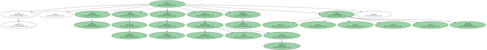

El poeta reunía todas las cualidades inherentes a la infancia, esas que están siempre presentes en la obra de los grandes genios.
Joan Brossa siempre me ha parecido un niño grande, y las diferentes facetas de su obra, las de un creador que, tocado por los dioses, ha tenido la suerte de no perder las ganas de sorprender y de sorprenderse, ni la capacidad de investigar, ni el gusto por la provocación y el juego ; es decir, todas las cualidades inherentes a la infancia que son imprescindibles para la creación y que sólo algunos caracteres geniales - - como Joan Miró o Pere Calders - - conservan toda la vida.
Brossa fue un poeta singular, un artista puro que tuvo la habilidad y la voluntad de interrelacionar diferentes formas artísticas ; todas, eso sí, al abrigo de la poesía: escrita, visual, escénica, corpórea.
Nunca fue superfluo, al contrario, fue un poeta esencial.
Las fotografías de Brossa en periódicos o revistas me permiten hoy recordarlo - - o sea admirarlo y dejar que me sorprenda - -, ahora ya con el pesar de hablar de él usando los verbos en pasado.
En la instantánea más antigua, Brossa es un joven de 30 años.
La foto pertenece a una serie de retratos que hizo el impresor Enric Tormo a Cuixart, Brossa, Ponç y Tàpies, los creadores de la revista vanguardista Dau al set, aquel aire que alegró intelectualmente los grises 40.
El retrato de los fundadores había de ilustrar el número extra de diciembre del año 49, hace ahora 50 años.
Encima de las fotografías ampliadas de las cuatro caras, Cuixart dibujó unos grafismos en tinta china que potenciaban el mensaje vanguardista de la publicación.
En esta fotografía retocada, cuesta reconocer a Brossa y parece, a primera vista, Salvador Dalí.
Pero la cabellera es la misma que lucirá casi toda la vida, y los símbolos que Cuixart le dibujó alrededor de la cabeza - - lunas, flechas, triángulos, montañas... - - eran ya la confirmación de su potencialidad creadora.
Sonetos clásicos, perfectamente formales, o expresiones poéticas de las clases populares, pero experimentando siempre para buscar nuevas formas, logrando con sus malabarismos verbales efectos sorprendentes del lenguaje y dando al lector con su mente de ilusionista imágenes del todo nuevas.
Pero siempre traduciendo en palabras sus imágenes visuales ; siempre siendo cotidiano y esencial a la vez.
En la fotografía que miro ahora Brossa es más joven.
Está de pie: jersey grueso, camisa de cuadros, gafas de concha, ojos que no miran al objetivo, expresión ausente, labios estrechos.
En la pared, su obra, una i minúscula, negra, tipográfica, que tiene encima un punto y un acento a la vez, aquello que siempre nos habían dicho que no podía ser: es el Brossa de la poesía visual, el más directo y efectivo, el más personal e identificable.
La firma del cuadro se ve clara, una firma de niño aplicado, un Brossa con las letras bien trazadas, la B un poco separada, las dos eses juntas, una línea debajo que empieza en la erre y que sigue hasta pasada la a.
La última foto que tengo de Brossa es de un periódico, de este diciembre.
Está en la inauguración del Museu de Joguets de Figueres.
Era miembro de su patronato y tiene una sala, la Brossa-Frégoli, donde está expuesta la colección que el poeta enamorado de la magia hizo sobre el transformista Leopold Frégoli y que cedió al museo.

En la foto se le ve relajado hablar con otra gente.
Estando en Figueres, tan cerca, debía pensar en el encargo que le acababa de hacer el Ayuntamiento de Girona: un poema corpóreo - - Brossa prefería este nombre - - para instalar en el Museu del Cinema.
La obra consta de una A mayúscula - - esas del poeta robustas, simples e inconfundibles - - que se colocará en la entrada del museo sobre una columna con la leyenda A de cinema.

La inauguración del poema corpóreo coincidirá con una exposición de homenaje al artista, que ahora será póstumo.
Me gustará tener un Brossa en casa.
Me gustará tenerlo en casa.